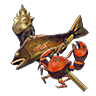
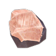
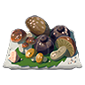
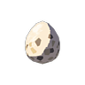
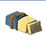
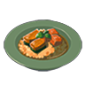
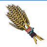
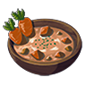

Pot Cooking
Cooking with a cooking pot
Information
What is here?
The tables below show the dish / meal, the ingredients / items used to make it, and a in-game description of that dish.
How to make:
Within the inventory menu, you can select up to five ingredients for Link to hold. These ingredients can be thrown into a cooking pot by pressing (A).
Cooking Combinations:
Cooking the wrong combination of ingredients will result in dubious food.
Nuts can be added to any dish without changing the dish type. For example, Raw Meat and an Acorn will result in a Meat Skewer.
Fruit can be added to Meat, Fish, and Seafood without changing the dish type. For example, Raw Meat and an Apple will result in a Meat Skewer.
Nuts, Mushrooms, Fruit, Vegetables, Herbs / Flowers, and Courser Bee Honey can be added to Warm Milk / Wheat Bread without changing the dish type. For example, adding an Ironshroom when cooking the dish will create Tough Warm Milk / Tough Wheat Bread.
Rock Salt can be added to Rice Balls without changing the dish.
Some dish types take priority. Fish and a Vegetable or Herb / Flower will result in Steamed Fish. Using Seafood and a Vegetable or Herb / Flower will also result in Steamed Fish, even though it was Seafood that was used. The same thing occurs with Fish and Mushroom Skewer and Meat and Seafood Fry.
No Hearts Below?
With 71 different ingredients and each dish having up to 5 possible ingredients in it, there could be as many as 14,000,000 different combinations. Due to this large number of possibilities there is not a clean way to show the amount of possible hearts each dish type will have.
Caculating the hearts for each dish:
How much each dish heals can be caculated by adding up the heart amounts of all the raw ingredients you plan to cook, and doubling it. The exception to this rule is Hearty dishes, which always heal for all your hearts and then add bonus yellow hearts.
The tables below show the dish / meal, the ingredients / items used to make it, and a in-game description of that dish.
How to make:
Within the inventory menu, you can select up to five ingredients for Link to hold. These ingredients can be thrown into a cooking pot by pressing (A).
Cooking Combinations:
Cooking the wrong combination of ingredients will result in dubious food.
Nuts can be added to any dish without changing the dish type. For example, Raw Meat and an Acorn will result in a Meat Skewer.
Fruit can be added to Meat, Fish, and Seafood without changing the dish type. For example, Raw Meat and an Apple will result in a Meat Skewer.
Nuts, Mushrooms, Fruit, Vegetables, Herbs / Flowers, and Courser Bee Honey can be added to Warm Milk / Wheat Bread without changing the dish type. For example, adding an Ironshroom when cooking the dish will create Tough Warm Milk / Tough Wheat Bread.
Rock Salt can be added to Rice Balls without changing the dish.
Some dish types take priority. Fish and a Vegetable or Herb / Flower will result in Steamed Fish. Using Seafood and a Vegetable or Herb / Flower will also result in Steamed Fish, even though it was Seafood that was used. The same thing occurs with Fish and Mushroom Skewer and Meat and Seafood Fry.
No Hearts Below?
With 71 different ingredients and each dish having up to 5 possible ingredients in it, there could be as many as 14,000,000 different combinations. Due to this large number of possibilities there is not a clean way to show the amount of possible hearts each dish type will have.
Caculating the hearts for each dish:
How much each dish heals can be caculated by adding up the heart amounts of all the raw ingredients you plan to cook, and doubling it. The exception to this rule is Hearty dishes, which always heal for all your hearts and then add bonus yellow hearts.
| Example | ||
| Apple
(1/2 Heart) |
x2 = | Baked Apple
(1 Heart) |
Base Dishes
Dishes that use only 1 type of ingredient
Dishes that use only 1 type of ingredient

Meat Skewer
Fish Skewer

Seafood Skewer
Seafood Skewer
Any Meat
Any Fish
Any Seafood
A juicy, filling snack made by grilling small chunks of meat on a skewer.
A simple dish made by cooking chunks of fresh fish on a skewer.
The natural water in this medley of seafaring creatures makes for a delicious broth.
Sautéed Nuts
Mushroom Skewer
Simmered Fruit
Any Nut
Any Mushroom
Any Fruit
These sautéed tree seeds are the perfect snack for the busy adventurer on the go!
This simple mushroom-packed skewer has its colorful presentation to thank for its appeal.
This sweet dish is made by heaping tasty fruits into a pan and simmering until tender.

Fried Wild Greens
Warm Milk
Rock-Hard Food
Any Vegetable or Herb / Flower
Fresh Milk
Bundle of Wood
Any mineral
(Flint, Luminous Stone, Amber, Dimond, Opal, Ruby, Sapphire, Topaz)
Any mineral
(Flint, Luminous Stone, Amber, Dimond, Opal, Ruby, Sapphire, Topaz)
A basic vegetable dish made by sautéing fresh wild plants.
Make this by heating up some milk. Drink it before bed to ensure a good night's sleep.
A dish gone awry after adding the wrong ingredient. Chewing your way through this won't be fun, but it will fill you up when you're between a rock and a hard place.
Copious Dishes
Dishes that use 4 different ingredients of the same type
Dishes that use 4 different ingredients of the same type
Copious Meat Skewers
Copious Seafood Skewers
Copious Mushroom Skewers
4 different Meats
4 different Fish or Seafood
4 different Mushrooms
Just shove a bunch of meat on to a skewer and you're good to go.
It's just a whole heap of stuff shoved on to a skewer, but it's still a pretty tasty dish.
Fans of fungal cuisine can't resist this simple mushroom-skewer dish. Very filling.
Copious Simmered Fruit
Copious Fried Wild Greens
4 different Fruits
4 different Vegetables or Herbs / Flowers
The flavors of the various fruits in this simmered dish exist in perfect harmony.
A healthy dish made by cooking mixed greens over a strong flame.
Meat and Seafood Dishes
Dishes that use only meat and seafood
Dishes that use only meat and seafood
Meat and Seafood Fry
Prime Meat and Seafood Fry
Gourmet Meat and Seafood Fry
Raw Meat or Raw Bird Drumstick
&
Fish or Seafood
&
Fish or Seafood
Raw Prime Meat or Raw Bird Thigh
&
Fish or Seafood
&
Fish or Seafood
Raw Gourmet Meat or Raw Whole Bird
&
Fish or Seafood
&
Fish or Seafood
A filling dish made by cooking fresh seafood and meat together.
This comfort dish is made with choice cuts of meat and seafood.
A marriage of the choicest cuts of meat and seafood. As delicious as it is filling!
Monster Stew
Any Meat
&
Any Fish or Seafood
&
Monster Extract
&
Any Fish or Seafood
&
Monster Extract
Meat and seafood simmered in monster extract. A savory dish despite its ingredients.
Mushroom Dishes
Dishes that use only mushroom and one other ingredient
Dishes that use only mushroom and one other ingredient
Meat and Mushroom Skewer
Fish and Mushroom Skewer
Fruit and Mushroom Mix
Any Meat
&
Any Mushroom
&
Any Mushroom
Any Fish or Seafood
&
Any Mushroom
&
Any Mushroom
Any Frut
&
Any Mushroom
&
Any Mushroom
A filling dish made by grilling various mountain ingredients with either Steak or Bird Meat.
A simple dish made by cooking skewered, fresh fish alongside fragrant mushrooms.
This dish contrasts the sweetness of fruit with the savoriness of mushrooms.
Steamed Dishes
Dishes that use only Vegetables or Herbs / Flowers and one other ingredient
Dishes that use only Vegetables or Herbs / Flowers and one other ingredient
Steamed Meat
Steamed Fish
Steamed Mushroom
Any Meat
&
Any Vegetable or Herb / Flower
&
Any Vegetable or Herb / Flower
Any Fish or Seafood
&
Any Vegetable or Herb / Flower
&
Any Vegetable or Herb / Flower
Any Mushroom
&
Any Vegetable or Herb / Flower
&
Any Vegetable or Herb / Flower
This meat dish has been wrapped in fragrant leaves and steamed to preserve its moisture.
A refined dish made by wrapping a fresh fish in fragrant wild greens and cooking it.
A healthy vegetable dish achieved by steaming mushrooms in plant leaves.
Steamed Fruit
Meat-Stuffed Pumpkin
Any Fruit
&
Any Vegetable or Herb / Flower
&
Any Vegetable or Herb / Flower
Fortified Pumpkin
&
Any Meat
&
Any Meat
A regional dish made by steaming near-ripened fruits in the leaves of fragrant plants.
Grants a low-level defense boost. This hollow, meat-filled fortified pumpkin is a local specialty or Kakariko Village.
Peppered Dishes
Dishes that use only Spicy Pepper(s) and / or one other ingredient
Dishes that use only Spicy Pepper(s) and / or one other ingredient
Sautéed Peppers
Pepper Steak
Pepper Seafood
Spicy Pepper(s)
Any Meat
&
Spicy Pepper
&
Spicy Pepper
Any Fish or Seafood
&
Spicy Pepper
&
Spicy Pepper
The spiciness of these sautéed peppers has been broken by the heat for a sweeter taste.
A dish made by cooking meat in crushed peppers, suppressing the gamy taste while accentuating its flavor.
The pepper seeds grilled with this seafood draw out its taste and pleasant aroma.
Honeyed / Glazed Dishes
Dishes that use only Courser Bee Honey and / or one other ingredient
Dishes that use only Courser Bee Honey and / or one other ingredient
 Courser Bee Honey
Courser Bee Honey
Glazed Meat
Glazed Seafood
Glazed Mushroom
Any Meat
Any Fish or Seafood
Any Mushroom
The sweetness of the honey permeates the meat, giving it a complex taste profile.
A seafood dish that you can actually wolf down whole!
The honey in this mushroom dish gives it a sweet, complex taste and a savory finish.
Honeyed Apple
Honeyed Fruit
Glazed Veggies
Apple
Any Fruit
(excluding apple)
(excluding apple)
Any Vegetable or Herb / Flower
A juicy sweet-and-sour dish combining newly ripened apples with honey.
A dish that combines the thick sweetness of honey with the acidity of sour fruits.
Don't like the taste of vegetables? Simply sauté them in honey for a salty-sweet flavor!
Honey Candy
Courser Bee Honey
A natural sweet, brimming with nutrition and made by stewing fresh honey.
Salt-grilled Dishes and Bread
Dishes that use only Rock Salt and one other ingredient
Dishes that use only Rock Salt and one other ingredient

Rock Salt
Rock Salt
Salt-Grilled Meat
Salt-Grilled Prime Meat
Salt-Grilled Gourmet Meat
Raw Meat or Raw Bird Drumstick
Raw Prime Meat or Raw Bird Thigh
Raw Gourmet Meat or Raw Whole Bird
Short on ingredients? Just rub some meat in salt and cook it for a simple, tasty dish.
A simple yet exquisite dish made by grilling high-quality meat on top of rock salt.
This lavish grilled dish makes liberal use of high-quality cuts of meat.
Salt-Grilled Fish
Salt-Grilled Crab

Salt-Grilled Mushroom
Salt-Grilled Mushroom
Any Fish
Any Crab
Any Mushroom
A simple dish made by rolling a whole fish in natural rock salt before grilling it.
Nine out of ten fishermen agree: crab is best enjoyed grilled and with just a bit of salt.
A basic mushroom dish made by lightly salting mushrooms and grilling them.
Salt-Grilled Greens
Wheat Bread
Any Vegetable or Any Herb / Flower
Tabantha Wheat
A health-boosting dish made with leafy greens and a touch of salt.
Made with wheat from the Tabantha region, this soft, springy bread smells just heavenly.
Omelets
Dishes that use Rock Salt and Bird Egg as their base
Dishes that use Rock Salt and Bird Egg as their base
Rock Salt

Bird Egg
Crab Omelet with Rice
Mushroom Omelet
Vegetable Omelet
Any Crab
&
Hylian Rice
&
Hylian Rice
Any Mushroom
&
Goat Butter
&
Goat Butter
Any Vegetable or Herb / Flower
&
Goat Butter
&
Goat Butter
The fluffy crab legs pair perfectly with the rice for a truly scrumptious dish.
The fluffy texture of this omelet is one of the great joys of this dish, as well as life.
This home-style dish mixes fluffy eggs with chopped vegetables for nutritional balance.
Omelet
(Base Ingredients)
minus (-) Rock Salt
minus (-) Rock Salt
This simple dish is common all over Hyrule. Simply fry egg until it's nice and plump.
Soups
Dishes that use Rock Salt and Fresh Milk as their base
Dishes that use Rock Salt and Fresh Milk as their base
Rock Salt

Fresh Milk
Creamy Meat Soup
Creamy Seafood Soup
Creamy Mushroom Soup
Any Meat
&
Any Vegetable or Herb / Flower
&
Any Vegetable or Herb / Flower
Any Seafood
&
Any Vegetable or Herb / Flower
&
Any Vegetable or Herb / Flower
Any Mushroom
&
Any Vegetable or Herb / Flower
&
Any Vegetable or Herb / Flower
This nutritious soup contains serious portions of lightly-braised meat and many vegetables.
Thick-cut chunks of seafood and stock provides a satisfying savoriness.
The creamy mushroom and vegetable soup is so chunky it eats like a meal!
Cream of Vegetable Soup
Veggie Cream Soup
Creamy Heart Soup
Any Vegetable
(excluding carrots or pumpkin)
(excluding carrots or pumpkin)
Swift or Endura Carrot
or
Fortified Pumpkin
or
Fortified Pumpkin
Voltfruit
&
Hydromelon
&
Big / Hearty Raddish
(minus (-) Rock Salt)
&
Hydromelon
&
Big / Hearty Raddish
(minus (-) Rock Salt)
Made by simmering vegetables in milk, this healthy dish is as simple as the ingredients.
This creamy soup showcases the sweetness of vegetables in a veritable taste explosion.
Enjoying this sweet soup with another person will bring you both closer together.
Monster Soup
Monster Extract
Using monster extract as a base, this soup's distinct gaminess is either loved or hated.
Rice Balls and Fried Egg
Dishes that use only Hylian Rice and one other ingredient
Dishes that use only Hylian Rice and one other ingredient

Hylian Rice
Meaty Rice Balls
Seafood Rice Balls
Mushroom Rice Balls
Any Meat
Any Fish or Seafood
Akny Mushroom
The sweet and spicy meat stuffed into these rice balls will keep you full for some time.
Stuffed with aromatic seafood, the flavor can vary by ingredients but never disappoints.
The aroma of the mushrooms tickles your nose as you peel back the leafy wrapping.
Veggie Rice Balls
Monster Rice Balls
Fried Egg and Rice
Any Vegetable or Herb / Flower
Monster Extract
Bird Egg
This home-style dish of Kakariko Village is stuffed with the bounty of the mountains.
Rice balls flavored with monster extract. Their unique aroma is not for everyone.
The soft egg yolk pairs well with the fresh rice in this simple dish.
Rice Bowls
Dishes that use Hylian Rice and Rock Salt as their base
Dishes that use Hylian Rice and Rock Salt as their base
Hylian Rice
Rock Salt
Meat and Rice Bowl
Prime Meat and Rice Bowl
Gourmet Meat and Rice Bowl
Raw Meat
or
Raw Bird Drumstick
or
Raw Bird Drumstick
Raw Prime Meat
or
Raw Bird Thigh
or
Raw Bird Thigh
Raw Gourmet Meat
or
Raw Whole Bird
or
Raw Whole Bird
This dish of rice and lightly seared meat is a mainstay all throughout Hyrule.
This bowl is loaded with high-quality meat. Your hunt for a serious meal ends here.
Only the most carefully selected cuts of high-quality meats go into this dish.
Seafood Fried Rice
Hearty Blueshell Snail
or
Any Porgy
or
Any Porgy
Various seafood has been sautéed with rice. The stronger the flame, the tastier the dish!
Risottos and Paellas
Dishes that use Hylain Rice, Rock Salt, and Goat Butter as their base
Dishes that use Hylain Rice, Rock Salt, and Goat Butter as their base
Hylian Rice
Rock Salt

Goat Butter
Goat Butter
Salmon Risotto
Crab Risotto
Paella
Hearty Salmon
Any Crab
Hearty Bluehsell Snail
&
Any Porgy
&
Any Porgy
The rice used in this rich risotto permeates the light flavor of the salmon.
An everyday stable of seaside villages, the secret to its delicious flavor lies in crab fat.
No fisherman's birthday bash would be complete without this top-shelf seafood dish.

Mushroom Risotto

Vegetable Risotto
Vegetable Risotto
Any Mushroom
Swift or Endura Carrot
or
Fortified Pumpkin
or
Fortified Pumpkin
The tantalizing aroma of mushrooms and butter beckons you to the table.
The sweetness of the ingredients gives this risotto a mild flavor.
Pilafs
Dishes that use Hylian Rice, Bird Egg, and Goat Butter as their base
Dishes that use Hylian Rice, Bird Egg, and Goat Butter as their base
Hylian Rice
Bird Egg
Goat Butter
Poultry Pilaf
Prime Poultry Pilaf
Gourmet Poultry Pilaf
Raw Bird Drumstick
Raw Bird Thigh
Raw Whole Bird
Sautéed Hylian rice steamed in poultry broth. Cook on low heat until the rice is fluffy.
The rice permeates the savory taste of the poultry in this Gerudo-region favorite.
Made with the highest-quality poultry, every bite of this pilaf floods your mouth with flavor.
Spiced and Sautéed Dishes
Dishes that use only Goron Spice and one other ingredient
Dishes that use only Goron Spice and one other ingredient

Goron Spice
Spiced Meat Skewer
Prime Spiced Meat Skewer
Gourmet Spiced Meat Skewer
Raw Meat
Raw Prime Meat
Raw Gourmet Meat
A special Goron spice covers up the scent of the meat, allowing its flavor to shine.
The simple preparation of this steak dish belies its complex taste profile.
The rich aroma and juicy texture of this high-quality meat puts it in a league of its own.
Crab Stir-Fry
Fragrant Mushroom Sauté
Herb Sauté
Any Crab
Any Mushroom
Any Vegetable or Herb / Flower
The Goron spice used in preparing this crab pairs perfectly with the flavor of the meat.
The fragrant aroma of this sautéed spice and mushroom dish makes your mouth water.
A fragrant mixture of herbs and spices. It's easily recognized by its unique aroma.
Curries
Dishes that use Goron Spice and Hylian Rice as their base
Dishes that use Goron Spice and Hylian Rice as their base
Goron Spice
Hylian Rice
Meat Curry
Prime Meat Curry
Gourmet Meat Curry
Raw Meat
Raw Prime Meat
Raw Gourmet Meat
The heat from the spice allows you to enjoy the large portion of the meat's savoriness.
The high-quality meat in this curry has given it a deeper taste than most other curries.
The high-quality meat used in this prized dish satisfies meat and curry lovers alike.
Poultry Curry
Prime Poultry Curry
Gourmet Poultry Curry
Raw Bird Drumstick
Raw Bird Thigh
Raw Whole Bird
The savory meat pairs well with the aroma of spice in this common curry.
The secret to this curry's flavor is taking it off the heat while you add the spices.
Once served in Hyrule Castle, the poultry used in this dish is of immensely high quality.
Curry Rice
Seafood Curry
Vegetable Curry
(Base Ingredients)
Hearty Blueshell Snail
or
Any Porgy
or
Any Porgy
Swift or Endura Carrot
or
Fortified Pumpkin
or
Fortified Pumpkin
A favorite all over Hyrule, this simple dish has a flavor you just won't get tired of.
This dish brims with treasures from the sea. Its spice packs a kick, so it's not for kids.
This healthy curry is popular for its mild flavor and moderate spiciness.
Monster Curry
Curry Pilaf
Monster Extract
Goat Butter
This unusual take on curry uses monster extract and doesn't rely on spices.
The goron spice used in this pilaf has given it a rich, spicy aroma.
Meunières and Hot Buttered Apple
Dishes that use Tabantha Wheat and Goat Butter as their base
Dishes that use Tabantha Wheat and Goat Butter as their base

Tabantha Wheat
Tabantha Wheat
Goat Butter
Salmon Meunière
Porgy Meunière
Seafood Meunière
Hearty Salmon
Any Porgy
Any Seafood
(excluding Hearty Salmon or Porgy)
(excluding Hearty Salmon or Porgy)
The crispy skin of this fried hearty salmon puts its texture in a class all its own.
Popular among residents of coastal regions, this juicy porgy is a delish dish.
Rich butter flanks fresh seafood. The secret ingredient is lots and lots of love.

Hot Buttered Apple
Apple
(minus (-) Tabantha Wheat)
(minus (-) Tabantha Wheat)
The apple's sweetness has been enhanced by smothering it with butter and baking it.
Strews and Chowder
Dishes that use Tabantha Wheat, Fresh Milk, and Goat Butter as their base
Dishes that use Tabantha Wheat, Fresh Milk, and Goat Butter as their base
Tabantha Wheat
Fresh Milk
Goat Butter
Meat Stew
Prime Meat Stew
Gorumet Meat Stew
Raw Meat
Raw Prime Meat
Raw Gourmet Meat
The hearty meat in this mainstay dish leaves bellies satisfied all throughout Hyrule.
Letting the large portions of choice cuts of meat simmer brought out their savoriness.
The meat has simmered for so long it melts in your mouth. A true bucket-list meal!
Clam Chowder

Carrot Stew
Carrot Stew
Pumpkin Stew
Hearty Blueshell Snail
Swift or Endura Carrot
Fortified Pumpkin
The nutritional value of hearty blueshell snail combines with butter and milk in a rich soup.
This simple stew sat simmering for a long time to bring out the sweetness of the carrots.
Simply simmer a fortified pumpkin to make this dish. A favorite in Kakariko Village.
Cakes, Pies, and Tarts
Dishes that use Tabantha Wheat, Cane Sugar, and Goat Butter as their base
Dishes that use Tabantha Wheat, Cane Sugar, and Goat Butter as their base
Tabantha Wheat

Cane Sugar
Goat Butter
Meat Pie
Fish Pie
Nutcake
Any Meat
(Rock Salt instead of Cane Sugar)
(Rock Salt instead of Cane Sugar)
Any Fish
(Rock Salt instead of Cane Sugar)
(Rock Salt instead of Cane Sugar)
Any Nut
You'll need an extra napkin to deal with this juicy pie of perfectly baked minced meat.
A mainstay in any fisherman's home, the crisp crust pairs well with the fishy flavor.
Forest nuts give this cake a pleasant texture and a simple, understated sweetness.
Apple Pie
Fruit Pie
Fruitcake
Apple
Any Fruit
Apple or Wildberrry
&
Any Fruit different then the first ingredient
(minus (-) Goat Butter)
&
Any Fruit different then the first ingredient
(minus (-) Goat Butter)
The crispy, flaky pie crust and sweet apples are a match made in heaven.
A celebration isn't a celebration until this fruit-filled crust hits the table!
Making ample use of fruits found all over Hyrule, this cake is a must for celebrations.
Fried Bananas

Carrot Cake
Pumpkin Pie
Mighty Bananas
(minus (-) Goat Butter)
(minus (-) Goat Butter)
Swift or Endura Carrot
Fortified Pumpkin
Children love fried mighty bananas. The trick is frying them over very high heat.
Even those who don't like carrots tend to enjoy the mild sweetness of this cake.
The intense sweetness of fortified pumpkins makes this dessert popular among children.
Monster Cake
Egg Tart
Monster Extract
Bird Egg
It's said that once you have a taste of this cake, you'll never forget its sweetness.
You'll know this simple dessert is done baking when it smells just delightful.
Crêpes
Dishes that use, Tabantha Wheat, Cane Sugar, Fresh Milk, and Bird Egg as their base
Dishes that use, Tabantha Wheat, Cane Sugar, Fresh Milk, and Bird Egg as their base
Tabantha Wheat
Cane Sugar
Fresh Milk
Bird Egg
Plain Crêpe
Wildberry Crêpe
Honey Crêpe
Goat Butter
Wildberry
Courser Bee Honey
The simplicity of this dish lets the flavor of its ingredients shine.
Sweet, tart wildberries are folded into thin, springy dough to make this dessert.
Honey has been drizzled over thin crepes to bring out their natural sweetness and flavor.

Egg Pudding
(base ingredients)
(minus (-) Tabantha Wheat)
(minus (-) Tabantha Wheat)
Made by cooking eggs and milk in a special mold, its soft texture melts in your mouth.
Dubious Food
Dishes that have gone wrong
Dishes that have gone wrong
Dubious Food
Combining Monster parts or Critters with normal food items will usually result in Dubious Food.
Cooking wrong combinations of ingredients may result in Dubious Food as well.
Cooking wrong combinations of ingredients may result in Dubious Food as well.
It's too gross to even look at. A bizarre smell issues forth from this heap. Eating it won't hurt you though...probably.